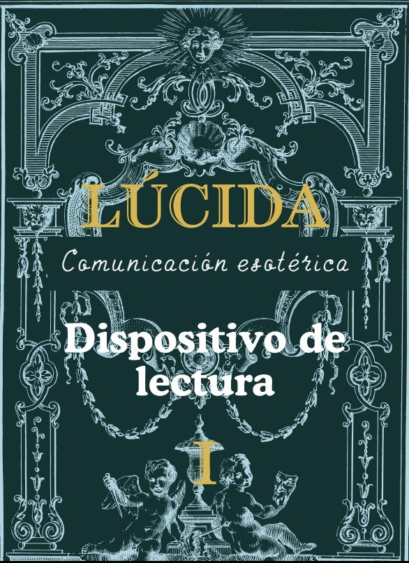

Los Dispositivos
Cada Dispositivo es consecuencia del anterior. Te recomendamos transitarlos en orden: I, II y III.

Dispositivo de Lectura
El punto de partida. Ejercicios de reflexión y de regreso al cuerpo para empezar a leer lo que sentís, antes de decidir nada.
- Workbook en PDF y versión en audio
- Profundidad: inicial
Adquirí el workbook
Audios próximamente
El pago y la descarga se realizan en Hotmart.
Dispositivo de Decisión
Sobre lo leído, ahora se elige. Ejercicios más complejos que llevan la reflexión a una decisión sentida en el cuerpo.
- Workbook en PDF y versión en audio
- Profundidad: intermedia
Adquirí el workbook
Audios próximamente
El pago y la descarga se realizan en Hotmart.
Dispositivo de Traducción
El cierre del recorrido. Se traduce lo decidido en experiencia y en acción, con el trabajo de mayor profundidad.
- Workbook en PDF y versión en audio
- Profundidad: avanzada
Adquirí el workbook
Audios próximamente
El pago y la descarga se realizan en Hotmart.
Antes de empezar, leé cómo se trabaja y cómo cuidarte durante los ejercicios.
Método y aviso